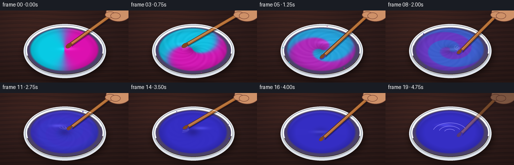
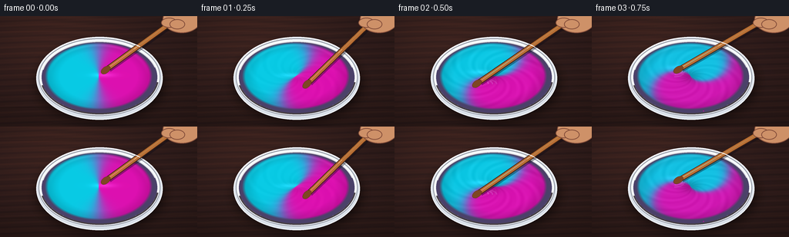

CODING AGENTS AS PIXEL WORLD MODELS
traex/GPT-5.6-Sol · phygen_124
点击播放 · 原生 RGB 像素
逐轮保存的候选
回放视频、检查图与代码变化。
每份候选均可单独播放。实际图片检查记录在下方工具轨迹中。
候选 01播放与检查图
点击播放 · 原生 RGB 像素


展开代码变化
--- 上一保存版本
+++ 本次保存版本
@@ -0,0 +1,230 @@
+from pathlib import Path
+import math
+import numpy as np
+from PIL import Image, ImageDraw, ImageFilter
+import artifact_io
+
+# Deterministic, entirely procedural text-to-video rendering.
+W, H, N = 256, 144, 20
+S = 4
+WW, HH = W*S, H*S
+CX, CY = 128*S, 78*S
+RX, RY = 70*S, 44*S
+rng = np.random.default_rng(124)
+
+
+def smoothstep(x):
+ x = np.clip(x, 0.0, 1.0)
+ return x*x*(3.0-2.0*x)
+
+
+def ellipse(draw, box, fill, outline=None, width=1):
+ draw.ellipse(tuple(int(v*S) for v in box), fill=fill, outline=outline, width=max(1,int(width*S)))
+
+
+def line(draw, pts, fill, width, joint="curve"):
+ draw.line([(int(x*S), int(y*S)) for x,y in pts], fill=fill, width=max(1,int(width*S)), joint=joint)
+
+
+def background(frame_i):
+ # Dark walnut worktop with soft directional light and tiny stable grain.
+ yy, xx = np.mgrid[0:HH, 0:WW]
+ xn, yn = xx/WW, yy/HH
+ vignette = 1.0 - 0.26*((xn-.47)**2 + 1.6*(yn-.42)**2)
+ light = 16*np.exp(-((xn-.27)**2/.20 + (yn-.05)**2/.32))
+ wood = 4.0*np.sin(yn*95 + 1.2*np.sin(xn*8)) + 2.0*np.sin(yn*225 + xn*15)
+ noise = rng.normal(0, .8, (HH,WW))
+ arr = np.empty((HH,WW,3), dtype=float)
+ arr[:,:,0] = (49 + light + wood + noise)*vignette
+ arr[:,:,1] = (31 + .55*light + .48*wood + noise*.5)*vignette
+ arr[:,:,2] = (29 + .35*light + .24*wood + noise*.35)*vignette
+ im = Image.fromarray(np.uint8(np.clip(arr,0,255)), 'RGB')
+ d = ImageDraw.Draw(im, 'RGBA')
+ # Fine wood seams and grain scratches.
+ for y, a in [(18,35),(119,48)]:
+ line(d, [(0,y),(256,y+1)], (12,6,6,a), 1)
+ line(d, [(0,y+1),(256,y+2)], (105,65,45,a//2), .4)
+ for k in range(18):
+ y = 5 + (k*37 % 137)
+ x = (k*71 + 13) % 220
+ length = 12 + (k*19 % 35)
+ line(d, [(x,y),(x+length,y + math.sin(k)*.8)], (113,72,52,22), .45)
+ return im
+
+
+def bowl_and_fluid(frame_i):
+ im = Image.new('RGBA', (WW,HH), (0,0,0,0))
+ d = ImageDraw.Draw(im, 'RGBA')
+ # Wide soft cast shadow under the bowl.
+ sh = Image.new('RGBA',(WW,HH),(0,0,0,0)); sd=ImageDraw.Draw(sh,'RGBA')
+ ellipse(sd, (48,37,213,137), (0,0,0,138))
+ sh = sh.filter(ImageFilter.GaussianBlur(7*S))
+ im.alpha_composite(sh)
+ d = ImageDraw.Draw(im,'RGBA')
+ # Outer ceramic body and rim.
+ ellipse(d, (47,27,211,135), (218,222,225,255), (248,250,250,255), 1.1)
+ ellipse(d, (50,29,208,130), (245,246,244,255), (151,157,164,230), 1.0)
+ ellipse(d, (54,33,204,126), (78,68,104,255))
+
+ # Fluid synthesized in normalized elliptical coordinates.
+ yy, xx = np.mgrid[0:HH,0:WW]
+ u = (xx-CX)/RX
+ v = (yy-CY)/RY
+ r = np.sqrt(u*u+v*v)
+ th = np.arctan2(v,u)
+ inside = r <= 1.0
+
+ # Stir starts almost immediately, develops thin folded ribbons, then diffuses.
+ p = float(smoothstep((frame_i-0.5)/15.5))
+ active = float(smoothstep(frame_i/2.2) * (1.0-smoothstep((frame_i-15.0)/3.0)))
+ rotation = frame_i*0.72
+ # Differential rotation: center races ahead of the rim, winding two colors into spirals.
+ twist = (1-r)**1.22 * (8.8*p) + rotation*(0.32 + .68*(1-r))
+ material_angle = th - twist
+ base_field = -np.cos(material_angle)
+ folds = (0.30*p*np.sin(3*material_angle + 8*r - frame_i*.38)
+ +0.13*p*np.sin(7*material_angle - 13*r + frame_i*.21))
+ field = np.tanh((3.8 + 2.5*p)*(base_field + folds))
+ # Contrast loss models rapid pigment diffusion; virtually gone in final frames.
+ contrast = (1.0-p)**1.32
+ wcyan = .5 + .5*field*contrast
+ cyan = np.array([13., 201., 221.])
+ magenta = np.array([221., 20., 171.])
+ mixed = np.array([57., 49., 190.]) # subtractive equal C+M: rich blue-violet
+ raw = wcyan[...,None]*cyan + (1-wcyan[...,None])*magenta
+ merge = smoothstep(p*1.08)
+ col = raw*(1-merge[...,None]) + mixed*merge[...,None]
+
+ # Rotational tonal streaks, wet gloss, edge darkening, and a transient vortex.
+ streak = (np.sin(12*th - 28*r - frame_i*1.45) + .5*np.sin(21*th-43*r+frame_i*.7))
+ col += (3.5*active*(1-p)*streak)[...,None]
+ edge = np.clip((r-.72)/.28,0,1)
+ col *= (1 - .16*edge[...,None])
+ vortex = active*np.exp(-(r/.19)**2)
+ col *= (1-.20*vortex[...,None])
+ # A broad wet highlight follows the rotating surface flow.
+ hx = .22*math.cos(frame_i*.82+1.1); hy=.17*math.sin(frame_i*.82+1.1)-.18
+ gloss = np.exp(-(((u-hx)/.32)**2 + ((v-hy)/.10)**2)*2.3)
+ col += gloss[...,None]*np.array([25,27,34])[None,None,:]
+ # Fine metallic-looking shine on the upper inner edge.
+ rimshine = np.exp(-((r-.91)/.035)**2) * np.clip(-v,0,1)
+ col += rimshine[...,None]*18
+ col = np.uint8(np.clip(col,0,255))
+ fluid = np.zeros((HH,WW,4),dtype=np.uint8)
+ fluid[:,:,:3]=col
+ # antialiased ellipse edge from a softened high-res radial mask
+ alpha = np.clip((1.0-r)*S*4.0,0,1)*255
+ fluid[:,:,3]=np.uint8(alpha)
+ im.alpha_composite(Image.fromarray(fluid,'RGBA'))
+
+ d=ImageDraw.Draw(im,'RGBA')
+ # Subtle inner-rim reflections make the bowl dimensional.
+ d.arc((54*S,33*S,204*S,126*S), 192, 344, fill=(255,255,255,190), width=1*S)
+ d.arc((52*S,31*S,206*S,128*S), 8, 167, fill=(111,116,129,110), width=2*S)
+
+ # A few energetic paint flecks against the inner wall only during vigorous mixing.
+ if 3 <= frame_i <= 14:
+ count = 2 + (frame_i % 3)
+ for k in range(count):
+ ang = (frame_i*1.77 + k*2.31) % (2*math.pi)
+ radx = 72 + ((k+frame_i)%3)*2
+ rady = 45 + ((2*k+frame_i)%2)*2
+ x=128+radx*math.cos(ang); y=78+rady*math.sin(ang)
+ rr=0.7+((k+frame_i)%2)*.45
+ tint=(64,50,190,205) if p>.45 else ((15,195,219,205) if math.cos(ang)<0 else (214,25,169,205))
+ ellipse(d,(x-rr,y-rr,x+rr,y+rr),tint)
+ return im
+
+
+def draw_stirrer(scene, frame_i):
+ # The hand drives the spoon around a compact circular path at >1 revolution/sec.
+ layer=Image.new('RGBA',(WW,HH),(0,0,0,0)); d=ImageDraw.Draw(layer,'RGBA')
+ if frame_i >= 18:
+ fade=(20-frame_i)/2
+ else:
+ fade=1.0
+ a = -1.0 + frame_i*1.72
+ # Smaller ellipse in image coordinates gives a believable circular orbit in bowl plane.
+ tipx=128 + 23*math.cos(a)
+ tipy=78 + 12*math.sin(a)
+ endx=230 + 2*math.sin(frame_i*.55)
+ endy=1 + 1.5*math.cos(frame_i*.7)
+ alpha=int(255*max(0,fade))
+
+ # Repeated translucent wake arcs suggest speed without obscuring the pigments.
+ if 2 <= frame_i <= 16:
+ for j in range(3):
+ aa=a-(j+1)*.18
+ x=128+23*math.cos(aa); y=78+12*math.sin(aa)
+ rr=9+j*2
+ d.arc(((x-rr)*S,(y-rr*.55)*S,(x+rr)*S,(y+rr*.55)*S),
+ int(math.degrees(aa)+95), int(math.degrees(aa)+245),
+ fill=(238,230,255,55-j*12), width=max(S,2*S-j))
+
+ # Spoon shadow on paint.
+ line(d,[(tipx+1.5,tipy+2),(endx+2,endy+3)],(15,12,25,int(95*fade)),6.4)
+ # Warm wooden handle: outlined, highlighted, with a subtle grain stripe.
+ line(d,[(tipx,tipy),(endx,endy)],(69,39,22,alpha),7.2)
+ line(d,[(tipx,tipy),(endx,endy)],(185,112,55,alpha),5.4)
+ line(d,[(tipx-.5,tipy-.4),(endx-.5,endy-.4)],(235,167,91,int(185*fade)),1.15)
+ # Spoon head submerged at the orbit position, aligned perpendicular-ish to flow.
+ vx=endx-tipx; vy=endy-tipy; L=math.hypot(vx,vy); ux=vx/L; uy=vy/L
+ # Elliptical head rendered as a polygon around shaft axis.
+ px,py=-uy,ux
+ head=[]
+ for q in range(24):
+ t=2*math.pi*q/24
+ along=-4.0 + 7.0*math.cos(t)
+ across=4.2*math.sin(t)
+ head.append(((tipx+along*ux+across*px)*S,(tipy+along*uy+across*py)*S))
+ d.polygon(head,fill=(128,73,38,alpha),outline=(69,38,25,alpha))
+ # Wet blue-violet paint coats the lower half of spoon.
+ wet=[]
+ for q in range(18):
+ t=math.pi*.05 + math.pi*1.1*q/17
+ along=-4.0 + 6.3*math.cos(t)
+ across=3.5*math.sin(t)
+ wet.append(((tipx+along*ux+across*px)*S,(tipy+along*uy+across*py)*S))
+ if frame_i>3:
+ d.line(wet,fill=(58,48,178,int(215*fade)),width=2*S)
+
+ # Cropped hand at top right, fingers visibly gripping the handle.
+ skin=(206,145,103,alpha); skin_dark=(132,79,59,alpha); skin_hi=(239,180,134,int(210*fade))
+ d.ellipse((211*S,-14*S,261*S,22*S),fill=skin,outline=skin_dark,width=1*S)
+ # curled fingers
+ d.ellipse((209*S,2*S,230*S,15*S),fill=skin,outline=skin_dark,width=1*S)
+ d.ellipse((220*S,4*S,240*S,17*S),fill=skin,outline=skin_dark,width=1*S)
+ d.arc((213*S,-8*S,254*S,17*S),190,330,fill=skin_hi,width=1*S)
+ scene.alpha_composite(layer)
+
+
+def final_accents(scene, frame_i):
+ d=ImageDraw.Draw(scene,'RGBA')
+ # A tiny static highlight on the ceramic lip.
+ d.arc((48*S,27*S,211*S,135*S), 205, 310, fill=(255,255,255,155), width=1*S)
+ # During the final beat, clean blue-violet surface ripple rings settle.
+ if frame_i>=17:
+ a=int(75*(20-frame_i)/3)
+ for rr in (11,22,34):
+ d.arc(((128-rr)*S,(78-rr*.55)*S,(128+rr)*S,(78+rr*.55)*S),195,335,
+ fill=(138,128,239,max(10,a)),width=1*S)
+
+
+def render(i):
+ scene=background(i).convert('RGBA')
+ scene.alpha_composite(bowl_and_fluid(i))
+ draw_stirrer(scene,i)
+ final_accents(scene,i)
+ # Downsample for smooth cinematic edges; mild contrast/color finish.
+ small=scene.convert('RGB').resize((W,H),Image.Resampling.LANCZOS)
+ arr=np.asarray(small).astype(np.float32)
+ arr=(arr-128)*1.035+128
+ # restrained warm/cool grade
+ arr[:,:,0]*=.99; arr[:,:,2]*=1.025
+ return np.uint8(np.clip(arr,0,255))
+
+
+if __name__ == '__main__':
+ frames=np.stack([render(i) for i in range(N)],axis=0)
+ artifact_io.save(frames, Path(__file__).resolve().parent)
+ print('saved',frames.shape,frames.dtype)
候选 02播放与检查图
点击播放 · 原生 RGB 像素
展开代码变化
--- 上一保存版本
+++ 本次保存版本
@@ -11,6 +11,7 @@
CX, CY = 128*S, 78*S
RX, RY = 70*S, 44*S
rng = np.random.default_rng(124)
+STATIC_NOISE = rng.normal(0, .8, (HH, WW))
def smoothstep(x):
@@ -33,12 +34,13 @@
vignette = 1.0 - 0.26*((xn-.47)**2 + 1.6*(yn-.42)**2)
light = 16*np.exp(-((xn-.27)**2/.20 + (yn-.05)**2/.32))
wood = 4.0*np.sin(yn*95 + 1.2*np.sin(xn*8)) + 2.0*np.sin(yn*225 + xn*15)
- noise = rng.normal(0, .8, (HH,WW))
+ # Fixed sensor/wood texture (not per-frame noise) keeps the set visually stable.
+ noise = STATIC_NOISE
arr = np.empty((HH,WW,3), dtype=float)
arr[:,:,0] = (49 + light + wood + noise)*vignette
arr[:,:,1] = (31 + .55*light + .48*wood + noise*.5)*vignette
arr[:,:,2] = (29 + .35*light + .24*wood + noise*.35)*vignette
- im = Image.fromarray(np.uint8(np.clip(arr,0,255)), 'RGB')
+ im = Image.fromarray(np.uint8(np.clip(arr,0,255)))
d = ImageDraw.Draw(im, 'RGBA')
# Fine wood seams and grain scratches.
for y, a in [(18,35),(119,48)]:
@@ -79,7 +81,8 @@
active = float(smoothstep(frame_i/2.2) * (1.0-smoothstep((frame_i-15.0)/3.0)))
rotation = frame_i*0.72
# Differential rotation: center races ahead of the rim, winding two colors into spirals.
- twist = (1-r)**1.22 * (8.8*p) + rotation*(0.32 + .68*(1-r))
+ inner = np.clip(1-r, 0, 1)
+ twist = inner**1.22 * (8.8*p) + rotation*(0.32 + .68*inner)
material_angle = th - twist
base_field = -np.cos(material_angle)
folds = (0.30*p*np.sin(3*material_angle + 8*r - frame_i*.38)
@@ -115,7 +118,7 @@
# antialiased ellipse edge from a softened high-res radial mask
alpha = np.clip((1.0-r)*S*4.0,0,1)*255
fluid[:,:,3]=np.uint8(alpha)
- im.alpha_composite(Image.fromarray(fluid,'RGBA'))
+ im.alpha_composite(Image.fromarray(fluid))
d=ImageDraw.Draw(im,'RGBA')
# Subtle inner-rim reflections make the bowl dimensional.
可观测工具轨迹
实际执行的命令与返回图片。
命令 1exit 0
/bin/bash -lc "cat prompt.txt && printf '\\n---RULES---\\n' && cat GENERATION_RULES.md && printf '\\n---SPEC---\\n' && cat task_spec.json"
命令 2exit 0
/bin/bash -lc "find . -maxdepth 2 -type f -printf '%p\\n' | sort | head -200"
命令 3exit 0
/bin/bash -lc "sed -n '1,240p' artifact_io.py"
命令 4exit 0
/bin/bash -lc "cat > generate.py <<'PY'
from pathlib import Path
import math
import numpy as np
from PIL import Image, ImageDraw, ImageFilter
import artifact_io
# Deterministic, entirely procedural text-to-video rendering.
W, H, N = 256, 144, 20
S = 4
WW, HH = W*S, H*S
CX, CY = 128*S, 78*S
RX, RY = 70*S, 44*S
rng = np.random.default_rng(124)
def smoothstep(x):
x = np.clip(x, 0.0, 1.0)
return x*x*(3.0-2.0*x)
def ellipse(draw, box, fill, outline=None, width=1):
draw.ellipse(tuple(int(v*S) for v in box), fill=fill, outline=outline, width=max(1,int(width*S)))
def line(draw, pts, fill, width, joint=\"curve\"):
draw.line([(int(x*S), int(y*S)) for x,y in pts], fill=fill, width=max(1,int(width*S)), joint=joint)
def background(frame_i):
# Dark walnut worktop with soft directional light and tiny stable grain.
yy, xx = np.mgrid[0:HH, 0:WW]
xn, yn = xx/WW, yy/HH
vignette = 1.0 - 0.26*((xn-.47)**2 + 1.6*(yn-.42)**2)
light = 16*np.exp(-((xn-.27)**2/.20 + (yn-.05)**2/.32))
wood = 4.0*np.sin(yn*95 + 1.2*np.sin(xn*8)) + 2.0*np.sin(yn*225 + xn*15)
noise = rng.normal(0, .8, (HH,WW))
arr = np.empty((HH,WW,3), dtype=float)
arr[:,:,0] = (49 + light + wood + noise)*vignette
arr[:,:,1] = (31 + .55*light + .48*wood + noise*.5)*vignette
arr[:,:,2] = (29 + .35*light + .24*wood + noise*.35)*vignette
im = Image.fromarray(np.uint8(np.clip(arr,0,255)), 'RGB')
d = ImageDraw.Draw(im, 'RGBA')
# Fine wood seams and grain scratches.
for y, a in [(18,35),(119,48)]:
line(d, [(0,y),(256,y+1)], (12,6,6,a), 1)
line(d, [(0,y+1),(256,y+2)], (105,65,45,a//2), .4)
for k in range(18):
y = 5 + (k*37 % 137)
x = (k*71 + 13) % 220
length = 12 + (k*19 % 35)
line(d, [(x,y),(x+length,y + math.sin(k)*.8)], (113,72,52,22), .45)
return im
def bowl_and_fluid(frame_i):
im = Image.new('RGBA', (WW,HH), (0,0,0,0))
d = ImageDraw.Draw(im, 'RGBA')
# Wide soft cast shadow under the bowl.
sh = Image.new('RGBA',(WW,HH),(0,0,0,0)); sd=ImageDraw.Draw(sh,'RGBA')
ellipse(sd, (48,37,213,137), (0,0,0,138))
sh = sh.filter(ImageFilter.GaussianBlur(7*S))
im.alpha_composite(sh)
d = ImageDraw.Draw(im,'RGBA')
# Outer ceramic body and rim.
ellipse(d, (47,27,211,135), (218,222,225,255), (248,250,250,255), 1.1)
ellipse(d, (50,29,208,130), (245,246,244,255), (151,157,164,230), 1.0)
ellipse(d, (54,33,204,126), (78,68,104,255))
# Fluid synthesized in normalized elliptical coordinates.
yy, xx = np.mgrid[0:HH,0:WW]
u = (xx-CX)/RX
v = (yy-CY)/RY
r = np.sqrt(u*u+v*v)
th = np.arctan2(v,u)
inside = r <= 1.0
# Stir starts almost immediately, develops thin folded ribbons, then diffuses.
p = float(smoothstep((frame_i-0.5)/15.5))
active = float(smoothstep(frame_i/2.2) * (1.0-smoothstep((frame_i-15.0)/3.0)))
rotation = frame_i*0.72
# Differential rotation: center races ahead of the rim, winding two colors into spirals.
twist = (1-r)**1.22 * (8.8*p) + rotation*(0.32 + .68*(1-r))
material_angle = th - twist
base_field = -np.cos(material_angle)
folds = (0.30*p*np.sin(3*material_angle + 8*r - frame_i*.38)
+0.13*p*np.sin(7*material_angle - 13*r + frame_i*.21))
field = np.tanh((3.8 + 2.5*p)*(base_field + folds))
# Contrast loss models rapid pigment diffusion; virtually gone in final frames.
contrast = (1.0-p)**1.32
wcyan = .5 + .5*field*contrast
cyan = np.array([13., 201., 221.])
magenta = np.array([221., 20., 171.])
mixed = np.array([57., 49., 190.]) # subtractive equal C+M: rich blue-violet
raw = wcyan[...,None]*cyan + (1-wcyan[...,None])*magenta
merge = smoothstep(p*1.08)
col = raw*(1-merge[...,None]) + mixed*merge[...,None]
# Rotational tonal streaks, wet gloss, edge darkening, and a transient vortex.
streak = (np.sin(12*th - 28*r - frame_i*1.45) + .5*np.sin(21*th-43*r+frame_i*.7))
col += (3.5*active*(1-p)*streak)[...,None]
edge = np.clip((r-.72)/.28,0,1)
col *= (1 - .16*edge[...,None])
vortex = active*np.exp(-(r/.19)**2)
col *= (1-.20*vortex[...,None])
# A broad wet highlight follows the rotating surface flow.
hx = .22*math.cos(frame_i*.82+1.1); hy=.17*math.sin(frame_i*.82+1.1)-.18
gloss = np.exp(-(((u-hx)/.32)**2 + ((v-hy)/.10)**2)*2.3)
col += gloss[...,None]*np.array([25,27,34])[None,None,:]
# Fine metallic-looking shine on the upper inner edge.
rimshine = np.exp(-((r-.91)/.035)**2) * np.clip(-v,0,1)
col += rimshine[...,None]*18
col = np.uint8(np.clip(col,0,255))
fluid = np.zeros((HH,WW,4),dtype=np.uint8)
fluid[:,:,:3]=col
# antialiased ellipse edge from a softened high-res radial mask
alpha = np.clip((1.0-r)*S*4.0,0,1)*255
fluid[:,:,3]=np.uint8(alpha)
im.alpha_composite(Image.fromarray(fluid,'RGBA'))
d=ImageDraw.Draw(im,'RGBA')
# Subtle inner-rim reflections make the bowl dimensional.
d.arc((54*S,33*S,204*S,126*S), 192, 344, fill=(255,255,255,190), width=1*S)
d.arc((52*S,31*S,206*S,128*S), 8, 167, fill=(111,116,129,110), width=2*S)
# A few energetic paint flecks against the inner wall only during vigorous mixing.
if 3 <= frame_i <= 14:
count = 2 + (frame_i % 3)
for k in range(count):
ang = (frame_i*1.77 + k*2.31) % (2*math.pi)
radx = 72 + ((k+frame_i)%3)*2
rady = 45 + ((2*k+frame_i)%2)*2
x=128+radx*math.cos(ang); y=78+rady*math.sin(ang)
rr=0.7+((k+frame_i)%2)*.45
tint=(64,50,190,205) if p>.45 else ((15,195,219,205) if math.cos(ang)<0 else (214,25,169,205))
ellipse(d,(x-rr,y-rr,x+rr,y+rr),tint)
return im
def draw_stirrer(scene, frame_i):
# The hand drives the spoon around a compact circular path at >1 revolution/sec.
layer=Image.new('RGBA',(WW,HH),(0,0,0,0)); d=ImageDraw.Draw(layer,'RGBA')
if frame_i >= 18:
fade=(20-frame_i)/2
else:
fade=1.0
a = -1.0 + frame_i*1.72
# Smaller ellipse in image coordinates gives a believable circular orbit in bowl plane.
tipx=128 + 23*math.cos(a)
tipy=78 + 12*math.sin(a)
endx=230 + 2*math.sin(frame_i*.55)
endy=1 + 1.5*math.cos(frame_i*.7)
alpha=int(255*max(0,fade))
# Repeated translucent wake arcs suggest speed without obscuring the pigments.
if 2 <= frame_i <= 16:
for j in range(3):
aa=a-(j+1)*.18
x=128+23*math.cos(aa); y=78+12*math.sin(aa)
rr=9+j*2
d.arc(((x-rr)*S,(y-rr*.55)*S,(x+rr)*S,(y+rr*.55)*S),
int(math.degrees(aa)+95), int(math.degrees(aa)+245),
fill=(238,230,255,55-j*12), width=max(S,2*S-j))
# Spoon shadow on paint.
line(d,[(tipx+1.5,tipy+2),(endx+2,endy+3)],(15,12,25,int(95*fade)),6.4)
# Warm wooden handle: outlined, highlighted, with a subtle grain stripe.
line(d,[(tipx,tipy),(endx,endy)],(69,39,22,alpha),7.2)
line(d,[(tipx,tipy),(endx,endy)],(185,112,55,alpha),5.4)
line(d,[(tipx-.5,tipy-.4),(endx-.5,endy-.4)],(235,167,91,int(185*fade)),1.15)
# Spoon head submerged at the orbit position, aligned perpendicular-ish to flow.
vx=endx-tipx; vy=endy-tipy; L=math.hypot(vx,vy); ux=vx/L; uy=vy/L
# Elliptical head rendered as a polygon around shaft axis.
px,py=-uy,ux
head=[]
for q in range(24):
t=2*math.pi*q/24
along=-4.0 + 7.0*math.cos(t)
across=4.2*math.sin(t)
head.append(((tipx+along*ux+across*px)*S,(tipy+along*uy+across*py)*S))
d.polygon(head,fill=(128,73,38,alpha),outline=(69,38,25,alpha))
# Wet blue-violet paint coats the lower half of spoon.
wet=[]
for q in range(18):
t=math.pi*.05 + math.pi*1.1*q/17
along=-4.0 + 6.3*math.cos(t)
across=3.5*math.sin(t)
wet.append(((tipx+along*ux+across*px)*S,(tipy+along*uy+across*py)*S))
if frame_i>3:
d.line(wet,fill=(58,48,178,int(215*fade)),width=2*S)
# Cropped hand at top right, fingers visibly gripping the handle.
skin=(206,145,103,alpha); skin_dark=(132,79,59,alpha); skin_hi=(239,180,134,int(210*fade))
d.ellipse((211*S,-14*S,261*S,22*S),fill=skin,outline=skin_dark,width=1*S)
# curled fingers
d.ellipse((209*S,2*S,230*S,15*S),fill=skin,outline=skin_dark,width=1*S)
d.ellipse((220*S,4*S,240*S,17*S),fill=skin,outline=skin_dark,width=1*S)
d.arc((213*S,-8*S,254*S,17*S),190,330,fill=skin_hi,width=1*S)
scene.alpha_composite(layer)
def final_accents(scene, frame_i):
d=ImageDraw.Draw(scene,'RGBA')
# A tiny static highlight on the ceramic lip.
d.arc((48*S,27*S,211*S,135*S), 205, 310, fill=(255,255,255,155), width=1*S)
# During the final beat, clean blue-violet surface ripple rings settle.
if frame_i>=17:
a=int(75*(20-frame_i)/3)
for rr in (11,22,34):
d.arc(((128-rr)*S,(78-rr*.55)*S,(128+rr)*S,(78+rr*.55)*S),195,335,
fill=(138,128,239,max(10,a)),width=1*S)
def render(i):
scene=background(i).convert('RGBA')
scene.alpha_composite(bowl_and_fluid(i))
draw_stirrer(scene,i)
final_accents(scene,i)
# Downsample for smooth cinematic edges; mild contrast/color finish.
small=scene.convert('RGB').resize((W,H),Image.Resampling.LANCZOS)
arr=np.asarray(small).astype(np.float32)
arr=(arr-128)*1.035+128
# restrained warm/cool grade
arr[:,:,0]*=.99; arr[:,:,2]*=1.025
return np.uint8(np.clip(arr,0,255))
if __name__ == '__main__':
frames=np.stack([render(i) for i in range(N)],axis=0)
artifact_io.save(frames, Path(__file__).resolve().parent)
print('saved',frames.shape,frames.dtype)
PY
python generate.py
ls -lh pixels.npz inspection.png index.html frames/00.png frames/19.png"命令 5exit 0
/bin/bash -lc "python generate.py && python - <<'PY'
import numpy as np
from PIL import Image
f=np.stack([np.asarray(Image.open(f'frames/{i:02d}.png')) for i in range(20)])
y,x=np.mgrid[0:144,0:256]; m=((x-128)/70)**2+((y-78)/44)**2<.75**2
for i in [0,3,7,11,15,19]:
a=f[i][m]
print(i, 'mean',a.mean(0).round(1),'spatial_std',a.std(0).round(1),'delta', (np.abs(f[i].astype(int)-f[i-1].astype(int)).mean() if i else 0))
print('artifacts OK',f.shape,f.dtype)
PY"保存候选 2 份；完成命令 5 次；可验证图片返回 0 张。原始 API 响应与完整日志保留在本地。